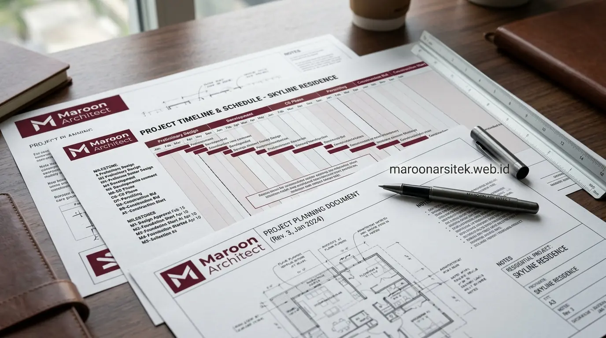

Mendirikan fasilitas usaha seperti ruko, gedung kantor, kafe, maupun klinik komersial menuntut pendekatan konstruksi yang presisi dan berorientasi pada efisiensi investasi. Melalui layanan jasa kontraktor bangunan komersial, proses konstruksi dikelola secara profesional agar selesai sesuai jadwal dan siap menunjang roda operasional bisnis Anda.
Tahapan Pembangunan Ruko dan Kantor Komersial
Pembangunan bangunan komersial seperti ruko dan kantor melalui tahapan yang lebih terstruktur dibanding rumah tinggal karena mempertimbangkan aspek fungsi usaha, beban operasional, dan kepatuhan terhadap regulasi bangunan gedung. Tahapan umum yang diterapkan pada proyek jasa kontraktor bangunan komersial meliputi hal berikut:
- Analisis Kebutuhan Bisnis: Memetakan jenis usaha, alur sirkulasi pengunjung, kebutuhan area servis, jumlah lantai, dan kapasitas pengguna harian.
- Perencanaan Desain & Struktur: Perancangan arsitektur dan struktur yang disesuaikan dengan ketentuan Koefisien Dasar Bangunan (KDB) dan Koefisien Lantai Bangunan (KLB) setempat.
- Penyusunan RAB & Kurva S: Perhitungan anggaran terperinci dan jadwal pelaksanaan berbasis kurva S sebagai acuan pengawasan progres fisik mingguan.
- Pelaksanaan Konstruksi Berlapis: Eksekusi pekerjaan struktur utama, dinding arsitektur, fasad komersial, hingga instalasi mekanikal elektrikal secara bertahap.
- Uji Fungsi Sistem (Testing & Commissioning): Pengujian sistem kelistrikan berdaya besar, plumbing, pembuangan limbah, dan sistem proteksi kebakaran dasar sebelum serah terima kunci.
Setiap tahapan tersebut didokumentasikan secara tertulis agar klien dapat memantau kesesuaian progres fisik dengan jadwal yang telah disepakati sejak awal kontrak kerja.
Perencanaan Struktur dan MEP untuk Bangunan Komersial
Bangunan komersial seperti ruko dan kantor umumnya menanggung beban operasional yang lebih tinggi dibanding rumah tinggal, baik dari sisi jumlah pengguna maupun kebutuhan sistem mekanikal elektrikal dan plumbing (MEP). Perencanaan yang matang pada aspek ini memengaruhi kenyamanan dan keamanan bangunan dalam jangka panjang:
- Struktur Kolom & Balok Kuat: Dirancang dengan bentang lebih leluasa dan mempertimbangkan potensi penambahan lantai atau perubahan fungsi ruang di masa mendatang.
- Kapasitas Kelistrikan Skala Usaha: Disesuaikan dengan kebutuhan beban puncak peralatan usaha, seperti pendingin ruangan (AC Central/VRF), server IT, atau mesin produksi ringan.
- Sistem Plumbing Terpisah: Jalur instalasi air bersih dan pembuangan kotoran dipisahkan antara area publik/tamu dan area servis privat untuk mempermudah perawatan.
- Optimasi Fasad & Ventilasi: Bukaan fasad kaca dirancang dengan lapisan penahan panas matahari guna mengurangi konsumsi energi pendinginan ruangan.
- Area Parkir & Loading Dock: Sirkulasi kendaraan pengunjung serta akses bongkar muat barang direncanakan matang agar tidak menimbulkan kemacetan di area sekitar.
Menyusun RAB Efisien untuk Proyek Bangunan Komersial
RAB efisien pada bangunan komersial bukan berarti memangkas kualitas material, melainkan menyusun alokasi biaya sesuai skala penggunaan dan prioritas fungsi bangunan. Pendekatan berikut umum diterapkan untuk menjaga efisiensi anggaran tanpa mengorbankan standar keamanan bangunan:
- Spesifikasi Material Berdasarkan Zona Lalu Lintas: Membedakan material finishing pada area lalu lintas tinggi (seperti lobby dan koridor utama) dengan area lalu lintas rendah (ruang arsip atau gudang).
- Perhitungan Volume Presisi: Menghitung volume pembesian, pengecoran ready-mix, dan luasan dinding secara akurat untuk meminimalkan sisa material (waste).
- Pengadaan Just-in-Time (JIT): Menjadwalkan pengiriman material tepat waktu sesuai tahapan pekerjaan guna menghindari biaya sewa gudang atau risiko kerusakan material di lokasi proyek yang sempit.
- Evaluasi Realistis Kebutuhan MEP: Merancang sistem utilitas sesuai kapasitas aktual operasional usaha tanpa memaksakan spesifikasi over-design yang tidak efisien.
- Pemisahan Dana Cadangan (Contingency): Mengalokasikan pos dana darurat secara terpisah untuk mengantisipasi kondisi tanah atau cuaca tanpa mengganggu pos biaya utama.

Secara umum, proyek bangunan komersial dengan perencanaan RAB dan jadwal yang detail sejak awal cenderung memiliki risiko pembengkakan biaya yang lebih rendah dibanding proyek yang memulai konstruksi sebelum perencanaan anggaran selesai disusun secara menyeluruh, sebuah pola yang kerap ditemukan dalam praktik manajemen konstruksi pada proyek skala menengah di Indonesia.
Timeline Pengerjaan yang Disesuaikan dengan Target Operasional Bisnis
Ketepatan waktu penyelesaian menjadi faktor krusial pada proyek bangunan komersial karena keterlambatan dapat berdampak langsung pada rencana operasional usaha klien, termasuk jadwal pembukaan toko (*grand opening*) atau operasional kantor baru. Penyusunan timeline yang realistis mempertimbangkan beberapa faktor berikut:
- Durasi Perizinan Gedung: Memperhitungkan waktu verifikasi dokumen teknis PBG agar proses awal konstruksi tidak tertunda.
- Lead Time Material Khusus: Memperhitungkan waktu fabrikasi baja profil bentang lebar atau fasad kaca curtain wall sejak awal.
- Jadwal Inspeksi Berkala: Melakukan evaluasi berkala oleh pengawas lapangan sebelum melanjutkan ke tahap penutupan struktur.
- Buffer Waktu Cuaca: Menyisipkan cadangan waktu untuk mengantisipasi musim hujan pada fase galian tanah dan pondasi awal.
Timeline yang disusun secara realistis sejak awal kontrak membantu klien merencanakan jadwal operasional bisnis dengan lebih akurat, termasuk koordinasi dengan pihak lain seperti penyewa ruang atau vendor jasa desain interior yang akan masuk setelah bangunan fisik selesai.
Pengurusan Perizinan dan Kepatuhan Regulasi Bangunan Komersial
Bangunan komersial tunduk pada regulasi yang lebih ketat dibanding rumah tinggal, termasuk aspek Persetujuan Bangunan Gedung (PBG) dan kesesuaian dengan tata ruang wilayah setempat. Cakupan layanan pada aspek ini umumnya meliputi hal berikut:
- Pendampingan Pengurusan PBG: Membantu kelengkapan dokumen teknis arsitektur, struktur, dan MEP untuk proses sidang perizinan resmi daerah.
- Kepatuhan Tata Ruang: Memastikan batas Garis Sempadan Bangunan (GSB), Garis Sempadan Jalan (GSJ), serta batas KDB/KLB terpenuhi secara legal.
- Standar Proteksi Kebakaran: Menyesuaikan penempatan hidran, tabung APAR, tangga darurat, dan jalur evakuasi sesuai standar damkar setempat.
- Penyerahan Dokumen Lengkap: Menyerahkan gambar terbangun (*as-built drawing*) dan manual operasional instalasi untuk keperluan perpanjangan izin operasional usaha.
Pendampingan pada aspek perizinan ini membantu mengurangi risiko keterlambatan proyek akibat kendala administratif yang sebenarnya dapat diantisipasi sejak tahap perencanaan awal. Klien juga mendapatkan dokumen teknis lengkap yang dapat digunakan di kemudian hari untuk kebutuhan administrasi usaha, seperti pengajuan izin operasional tambahan atau proses renovasi lanjutan setelah bangunan beroperasi dalam jangka waktu tertentu.
Manajemen Proyek untuk Meminimalkan Gangguan Operasional Usaha
Pada proyek renovasi atau perluasan bangunan komersial yang masih beroperasi, manajemen proyek perlu dirancang agar aktivitas usaha klien tetap dapat berjalan dengan gangguan seminimal mungkin selama masa konstruksi:
- Pekerjaan Bising di Luar Jam Operasional: Pembongkaran atau pengeboran berat dijadwalkan pada malam hari atau akhir pekan saat tempat usaha tutup.
- Partisi & Dust Barrier: Pemasangan dinding penutup debu kedap udara untuk melindungi area pelanggan dari serpihan debu konstruksi.
- Manajemen Kelistrikan Terkoordinasi: Pengaturan pemadaman sementara yang dikomunikasikan jauh-jauh hari agar transaksi bisnis harian tidak terganggu.
- Jalur Akses Terpisah: Memisahkan pintu masuk material tukang dengan akses keluar masuk pengunjung ruko/kantor.
Pendekatan manajemen proyek semacam ini khususnya relevan untuk proyek renovasi kantor atau ruko yang berlokasi di kawasan bisnis padat, di mana gangguan terhadap operasional usaha dapat berdampak langsung pada pendapatan klien selama masa konstruksi berlangsung.
"Konstruksi bangunan komersial yang sukses adalah konstruksi yang presisi secara teknis, patuh regulasi daerah, dan diserahterimakan tepat waktu sesuai target operasional bisnis klien."
— Project Manager, Maroon Arsitek
Perbedaan Kebutuhan Konstruksi Ruko dan Kantor Komersial
Meskipun sama-sama tergolong bangunan komersial, ruko dan kantor memiliki karakteristik kebutuhan konstruksi yang cukup berbeda sehingga perencanaannya tidak dapat disamakan begitu saja:
- Fleksibilitas Lantai Dasar Ruko: Ruko umumnya memerlukan area depan yang terbuka dan mudah diakses pejalan kaki, dengan lantai dasar dirancang fleksibel untuk berbagai jenis usaha ritel atau jasa.
- Pembagian Zonasi Kantor: Kantor cenderung memerlukan pembagian ruang kerja yang lebih terstruktur, termasuk ruang rapat, area kerja bersama (*coworking*), dan ruang penyimpanan dokumen.
- Beban Lantai Struktural: Beban lantai pada ruko dengan fungsi gudang atau tempat penyimpanan barang perlu diperhitungkan lebih tinggi dibanding lantai kantor dengan fungsi administratif biasa.
- Sistem Tata Udara (HVAC): Sistem tata udara pada kantor umumnya dirancang untuk kenyamanan kerja jangka panjang, sementara pada ruko lebih disesuaikan dengan jam operasional dan volume pengunjung.
- Signage & Tampilan Fasad: Kebutuhan *signage* dan tampilan fasad pada ruko lebih menonjolkan identitas komersial mencolok, sementara fasad gedung kantor cenderung lebih formal, elegan, dan profesional.
Pemahaman terhadap perbedaan ini membantu proses perencanaan desain dan RAB menjadi lebih tepat sasaran sejak tahap awal, sehingga bangunan yang dihasilkan benar-benar sesuai dengan pola operasional usaha yang akan berjalan di dalamnya.
Pengawasan Kualitas pada Proyek Bangunan Komersial
Pengawasan kualitas pada bangunan komersial memerlukan perhatian lebih pada aspek struktural dan sistem MEP dibanding rumah tinggal, mengingat intensitas penggunaan bangunan yang lebih tinggi dan melibatkan banyak pihak, termasuk karyawan, pelanggan, atau penyewa ruang:
- Uji Beban & Mutu Beton: Pengambilan sampel silinder beton (*slump test & crushing test*) untuk memastikan mutu beton struktur memenuhi standar SNI.
- Inspeksi Sambungan Baja: Pemeriksaan ketebalan dan kualitas pengelasan sambungan baja pada gedung komersial berbentang lebar.
- Uji Tekanan Pipa Plumbing: Uji tekanan hidrostatis pipa sebelum dinding diplester untuk memastikan tidak ada potensi rembesan tersembunyi.
- Pemeriksaan Panel Listrik Beban Puncak: Uji beban simultan (*load test*) pada panel induk listrik (LVMDP) untuk mencegah risiko trip saat jam operasional sibuk.
- Evaluasi Menyeluruh Pra-Serah Terima: Uji fungsi komprehensif seluruh sistem gedung sebelum serah terima kunci dilakukan bersama klien.